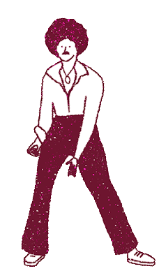

«Prenez garde, O voyageur, la route voyage aussi», a écrit Rainer Maria Rilke…
Un paysage, loin d'être une réalité figée, est l'expérience et l'interaction, une interface négociée entre l'environnement et la personne qui le peuple avec ses pas et ses émotions. Collectivement et individuellement, nous et le paysage tissons ensemble un scénario mêlant le réel et le symbolique, le culturel et le naturel, l'objectif et le subjectif.
动态网自由门 天安門 天安门 法輪功 李洪志 Free Tibet 六四天安門事件 The Tiananmen Square protests of 1989 天安門大屠殺 The Tiananmen Square Massacre 反右派鬥爭 The Anti-Rightist Struggle 大躍進政策 The Great Leap Forward 文化大革命 The Great Proletarian Cultural Revolution 人權 Human Rights 民運 Democratization 自由 Freedom 獨立 Independence 多黨制 Multi-party system 台灣 臺灣 Taiwan Formosa 中華民國 Republic of China 西藏 土伯特 唐古特 Tibet 達賴喇嘛 Dalai Lama 法輪功 Falun Dafa 新疆維吾爾自治區 The Xinjiang Uyghur Autonomous Region 諾貝爾和平獎 Nobel Peace Prize 劉暁波 Liu Xiaobo 民主 言論 思想 反共 反革命 抗議 運動 騷亂 暴亂 騷擾 擾亂 抗暴 平反 維權 示威游行 李洪志 法輪大法 大法弟子 強制斷種 強制堕胎 民族淨化 人體實驗 肅清 胡耀邦 趙紫陽 魏京生 王丹 還政於民 和平演變 激流中國 北京之春 大紀元時報 九評論共産黨 獨裁 專制 壓制 統一 監視 鎮壓 迫害 侵略 掠奪 破壞 拷問 屠殺 活摘器官 誘拐 買賣人口 遊進 走私 毒品 賣淫 春畫 賭博 六合彩 天安門 天安门 法輪功 李洪志 Winnie the Pooh 劉曉波动态网自由门
